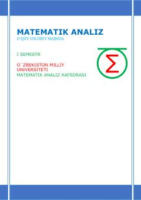

MAAmaliy matematika talabalari uchun matematik analiz fanidan o'quv-uslubiy majmua.
Ushbu o'quv-uslubiy majmua amaliy matematika va informatika yo'nalishi talabalari uchun mo'ljallangan bo'lib, matematik analiz fanining birinchi semestr mavzularini qamrab oladi. Majmuada to'plamlar, haqiqiy sonlar va sonli ketma-ketliklar limiti bo'yicha ma'ruzalar, amaliy mashg'ulotlar va testlar jamlangan.